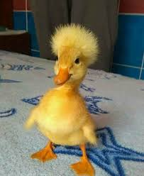

Pato de moicano
Professor
Com suas penas macias e pequenas, ele se move de forma desajeitada na água, mas, ao mesmo tempo, transmite uma sensação de ternura. Seus olhinhos brilhantes e o som suave de seus quacks deixam o ambiente mais alegre, tornando-o uma presença cativante em qualquer lugar.